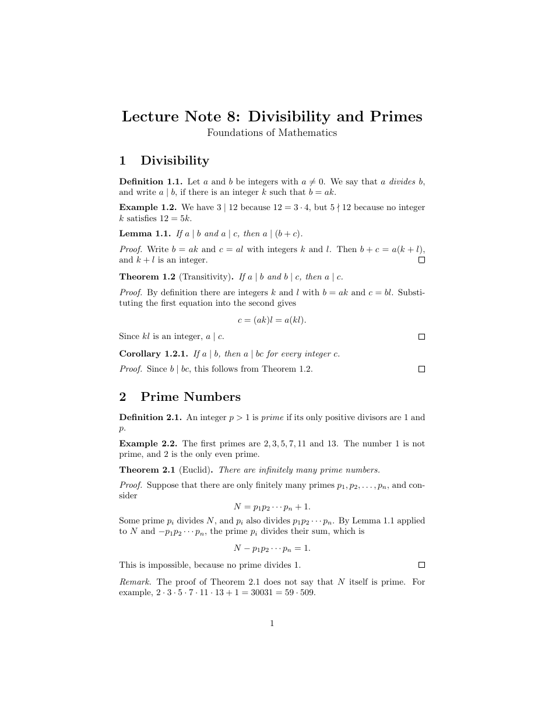

วัตถุประสงค์
เมื่อจบ Workshop นี้ นักศึกษาจะสามารถ
- นิยามสภาพแวดล้อมแบบทฤษฎีบทด้วย
\newtheoremจากแพ็กเกจamsthmได้ - ควบคุมการนับเลข ได้แก่ นับตามหัวข้อ ใช้ตัวนับร่วมกัน และนับต่อจากทฤษฎีบท ได้
- สร้างสภาพแวดล้อมที่ไม่มีหมายเลขด้วย
\newtheorem*ได้ - เลือกรูปแบบด้วย
\theoremstyleได้แก่plain,definitionและremark - เขียนบทพิสูจน์ด้วยสภาพแวดล้อม
proofได้
ไฟล์ที่ได้รับ
ดาวน์โหลด theorems_proofs.zip แล้วแตกไฟล์ไว้ในที่ที่หาง่าย จะได้โฟลเดอร์ theorems_proofs ดังนี้
theorems_proofs/
├── doc.pdf ชิ้นงานต้นแบบ (1 หน้า)
├── warmup.tex ไฟล์สั้น ๆ สำหรับ Part A
├── main.tex ไฟล์เริ่มต้นสำหรับ Part B
└── content.txt เนื้อหาทั้งหมดของ Part B ไม่ต้องพิมพ์ใหม่ดูไฟล์แยกทีละไฟล์ได้ที่
warmup.tex,
main.tex,
content.txt
เตรียมเครื่อง
ประมาณ 5 นาทีใช้เครื่องมือชุดเดียวกับ Workshop ก่อนหน้า เปิดโฟลเดอร์ theorems_proofs ใน Sublime Text และเปิดเทอร์มินัลในโฟลเดอร์เดียวกัน
ใช้แพ็กเกจ mathtools, amssymb และเพิ่ม amsthm คอมไพล์ 2 ครั้งเมื่อมี \ref
\newtheorem ไม่ได้พิมพ์อะไรลงเอกสาร แต่สร้างสภาพแวดล้อมใหม่ ไว้ในส่วนนำ แล้วจึงใช้สภาพแวดล้อมนั้นในเนื้อหา
เช่น \newtheorem{theorem}{Theorem} สร้าง \begin{theorem}...\end{theorem} ที่ขึ้นต้นด้วยคำว่า Theorem และหมายเลข
อุ่นเครื่อง
ประมาณ 35 นาทีไฟล์ warmup.tex มีนิยาม ทฤษฎีบท และบทพิสูจน์ที่เขียนด้วย \textbf ธรรมดา ทำทีละข้อเพื่อเปลี่ยนเป็นสภาพแวดล้อมแบบทฤษฎีบท
- A0 ทำให้ผิดโดยตั้งใจ ครอบทฤษฎีบทแรกด้วย
\begin{theorem}...\end{theorem}(ลบ\textbf{Theorem.}ออก) แล้วคอมไพล์
พิมพ์ x แล้ว Enter จากนั้นแทนบรรทัด! LaTeX Error: Environment theorem undefined. See the LaTeX manual or LaTeX Companion for explanation. Type H <return> for immediate help. ... l.18 \begin{theorem} ?% A0: ...ในส่วนนำด้วย\usepackage{amsthm} \newtheorem{theorem}{Theorem}อาร์กิวเมนต์แรกและอาร์กิวเมนต์ที่สองของ
\newtheoremทำหน้าที่ต่างกันอย่างไร ข้อความในทฤษฎีบทเป็นตัวอักษรแบบใด - A1 ทำทฤษฎีบทที่สองให้เป็น
theoremด้วย และใส่ชื่อทฤษฎีบทด้วย\begin{theorem}[Odd times odd]ชื่อในวงเล็บเหลี่ยมแสดงตรงไหน หมายเลขของทฤษฎีบทที่สองเป็นเท่าไร
- A2 บทพิสูจน์ แทน
\textbf{Proof.}ด้วย\begin{proof}...\end{proof}คำว่า Proof เปลี่ยนรูปแบบอย่างไร และเครื่องหมายสี่เหลี่ยมท้ายบทพิสูจน์มาจากที่ใด
- A3 นับตามหัวข้อ เปลี่ยนเป็น
\newtheorem{theorem}{Theorem}[section]แล้วเพิ่ม
ใส่\newtheorem{lemma}[theorem]{Lemma} \newtheorem{corollary}{Corollary}[theorem]lemmaสั้น ๆ หนึ่งอันก่อนทฤษฎีบทแรก และcorollaryหลังทฤษฎีบทที่สองวงเล็บเหลี่ยมที่อยู่หลังชื่อ (
[section]) กับวงเล็บเหลี่ยมที่อยู่ระหว่างอาร์กิวเมนต์ ([theorem]) ให้ผลต่างกันอย่างไร - A4 ไม่มีหมายเลข นิยาม
\newtheorem*{remark}{Remark}แล้วเปลี่ยน\textbf{Remark.}ให้เป็นสภาพแวดล้อมremarkทำไม
\newtheorem*จึงไม่มีอาร์กิวเมนต์สำหรับตัวนับ - A5 รูปแบบ เขียนในส่วนนำตามลำดับนี้
(ลบ\theoremstyle{definition} \newtheorem{definition}{Definition}[section] \theoremstyle{remark} \newtheorem*{remark}{Remark}\newtheorem*{remark}ของข้อ A4 ออก) แล้วเปลี่ยน\textbf{Definition.}เป็นสภาพแวดล้อมdefinitionทฤษฎีบท นิยาม และข้อสังเกต ต่างกันที่ตัวอักษรอย่างไร ถ้าย้าย
\newtheorem{theorem}...ไปไว้หลัง\theoremstyle{remark}จะเกิดอะไรขึ้น - A6 อ้างอิง ใส่
\label{thm:sum}ต่อจาก\begin{theorem}ของทฤษฎีบทแรก และเขียนBy Theorem~\ref{thm:sum}, ...ในข้อสังเกต คอมไพล์ 2 ครั้งหมายเลขที่ได้ตรงกับหมายเลขของทฤษฎีบทหรือไม่
- A7 ทำให้ผิดโดยตั้งใจ เขียน
\newtheorem{theorem}...ซ้ำสองครั้งในส่วนนำ! LaTeX Error: Command \theorem already defined. Or name \end... illegal, see p.192 of the manual.ทำไมจึงนิยามชื่อเดิมซ้ำไม่ได้
- A8 ลบ
\usepackage{amsthm}ออกชั่วคราวแล้วคอมไพล์! LaTeX Error: Environment proof undefined.สภาพแวดล้อมใดมาจาก
แก้ไฟล์กลับให้คอมไพล์ผ่าน (หมายเลขบรรทัดของแต่ละคนอาจไม่ตรงกับตัวอย่าง)amsthmโดยตรง และคำสั่งใดใน LaTeX ใช้ได้แม้ไม่มีamsthm
\newtheorem ต้องเขียนไว้ที่ใด (2) วงเล็บเหลี่ยม 2 ตำแหน่งของ \newtheorem ต่างกันอย่างไร
(3) \theoremstyle มีผลกับ \newtheorem ใดบ้าง และ (4) สภาพแวดล้อม proof ใส่อะไรให้โดยอัตโนมัติ
งานหลัก
ประมาณ 55 นาทีเปิด main.tex และคัดลอกเนื้อหาจาก content.txt มาวาง เพื่อสร้างเอกสารประกอบการสอน 1 หน้าให้เหมือน doc.pdf มากที่สุด คอมไพล์ 2 ครั้งด้วย
$ pdflatex main.tex
$ pdflatex main.tex
คำแนะนำ
สังเกตหมายเลขในต้นแบบให้ดี เพราะเป็นตัวบอกว่าสภาพแวดล้อมใดใช้ตัวนับร่วมกัน ตารางนี้บอกเฉพาะสิ่งที่ต้องใช้
| ส่วนของชิ้นงาน | สิ่งที่ต้องใช้ |
|---|---|
| Lemma 1.1, Theorem 1.2, Theorem 2.1 | รูปแบบ plain, นับตาม section, Lemma ใช้ตัวนับร่วมกับ Theorem |
| Corollary 1.2.1 | นับต่อจากหมายเลขของ Theorem |
| Definition 1.1, Example 1.2 | รูปแบบ definition, นับตาม section, Example ใช้ตัวนับร่วมกับ Definition |
| Remark | รูปแบบ remark และไม่มีหมายเลข |
| (Transitivity), (Euclid) | อาร์กิวเมนต์เสริม [...] หลัง \begin{theorem} |
| Proof | สภาพแวดล้อม proof |
| Theorem 1.2, Lemma 1.1, Theorem 2.1 ในเนื้อความ | \label และ \ref |
| สัญลักษณ์ | \mid, \nmid (จาก amssymb), \cdot, \ldots, \cdots |
คำใบ้เพิ่มเติม (เปิดดูเมื่อติด)
- ต้องนิยาม
theoremก่อนlemmaและcorollaryเพราะทั้งสองอ้างถึงตัวนับtheorem \theoremstyleมีผลกับ\newtheoremทุกตัวที่ตามมา จนกว่าจะเปลี่ยนรูปแบบใหม่ จึงต้องจัดกลุ่มตามรูปแบบ- ใช้
a \mid bแทนa | bเพราะ\midมีระยะห่างของความสัมพันธ์ที่ถูกต้อง
ส่งงาน
เปลี่ยนชื่อไฟล์เป็น theorems_proofs_<รหัสนักศึกษา>.tex แล้วคอมไพล์ใหม่ 2 ครั้งด้วยชื่อนั้น ส่งทั้งไฟล์ .tex และ .pdf
รายการตรวจสอบก่อนส่ง
ท้าทาย
ไม่บังคับ · ประมาณ 20–30 นาทีทำเพิ่มในไฟล์ใหม่ ข้อใดก็ได้
- C1 ทำให้ทุกสภาพแวดล้อมที่มีหมายเลข (นิยาม ตัวอย่าง บทตั้ง ทฤษฎีบท) ใช้ตัวนับเดียวกัน จะได้ลำดับ 1.1, 1.2, 1.3, ... ต่อเนื่องกัน
แบบใดช่วยให้ผู้อ่านหาหมายเลขที่อ้างถึงได้ง่ายกว่า
- C2 เปลี่ยนชื่อหัวบทพิสูจน์ด้วย
\begin{proof}[Proof of Theorem~\ref{thm:euclid}] - C3 เปลี่ยนเอกสารเป็นคลาส
reportและนับทฤษฎีบทตามchapterแทนsection - C4 เขียนเอกสาร 1 หน้าที่มีนิยาม ทฤษฎีบท และบทพิสูจน์จากวิชาคณิตศาสตร์ที่เรียนอยู่ เช่น จำนวนคู่และคี่ เซต หรือลำดับ
ข้อผิดพลาดที่พบบ่อย
| อาการ | สาเหตุและวิธีแก้ |
|---|---|
! LaTeX Error: Environment theorem undefined. |
ยังไม่ได้นิยามด้วย \newtheorem หรือสะกดชื่อไม่ตรงกัน |
! LaTeX Error: Environment proof undefined. |
ยังไม่ได้ \usepackage{amsthm} |
! LaTeX Error: Command \theorem already defined. |
นิยามชื่อเดียวกันสองครั้ง ตรวจส่วนนำ |
! LaTeX Error: No counter 'theorem' defined. |
ใช้ [theorem] ใน \newtheorem ก่อนนิยาม theorem ให้ย้ายลำดับ |
| ทฤษฎีบทเป็นตัวตรงแทนตัวเอียง | \newtheorem{theorem} อยู่หลัง \theoremstyle{definition} ให้จัดกลุ่มตามรูปแบบใหม่ |
| หมายเลขบทแทรกเป็น 1 แทน 1.2.1 | ลืม [theorem] ท้าย \newtheorem{corollary}{Corollary} |
| อ้างถึงทฤษฎีบทได้หมายเลขของหัวข้อ | วาง \label ไว้นอกสภาพแวดล้อม ให้วางไว้หลัง \begin{theorem} |
แหล่งอ้างอิง
- สไลด์บทเรียน Theorems and Proofs (amsthm, Numbered Theorems, Unnumbered Theorems, Theorem Styles, Proofs)
- The Not So Short Introduction to LaTeX (เปิดด้วย
texdoc lshort) หัวข้อ 3.9 Theorems, Lemmas, …